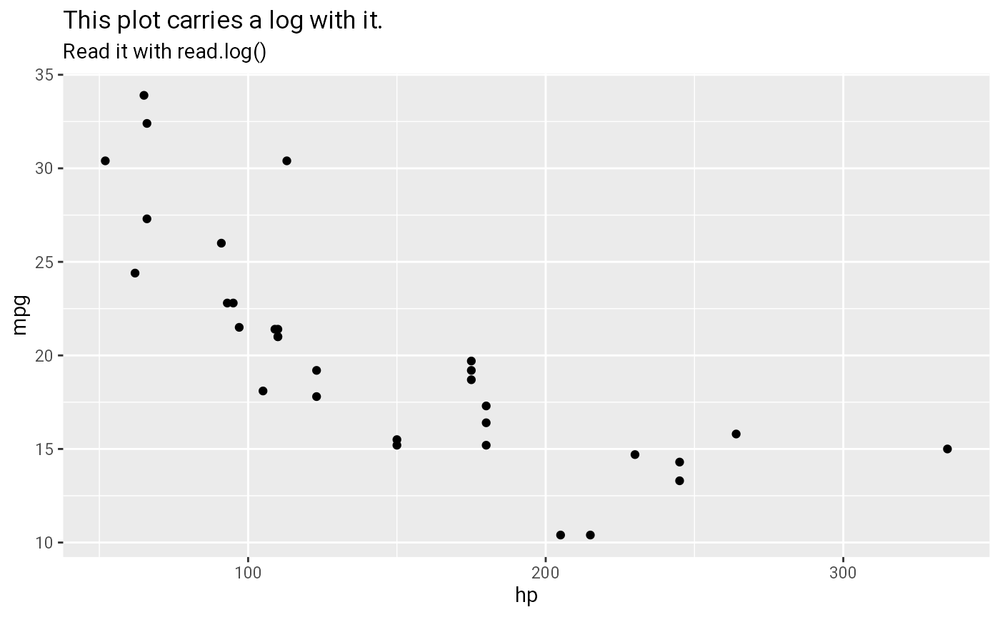
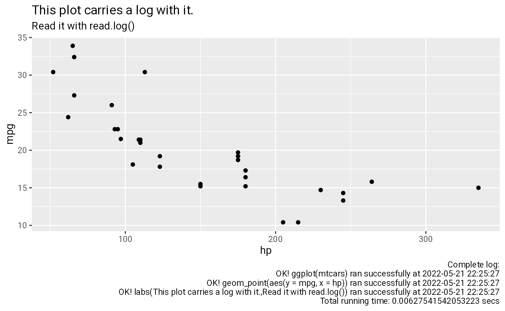

Decorating {ggplot2} functions
Source:vignettes/self-documenting-ggplot2.Rmd
self-documenting-ggplot2.RmdSince version 0.3.0, {chronicler} ships with the ggrecord() function, which allows to decorate functions from the ggplot2 package. It is thus possible to create chronicle objects where the value is a ggplot. Here is an example:
r_ggplot <- ggrecord(ggplot)
r_geom_point <- ggrecord(geom_point)
r_labs <- ggrecord(labs)
a <- r_ggplot(mtcars) %>+%
r_geom_point(aes(y = mpg, x = hp)) %>+%
r_labs(title = "This plot carries a log with it.",
subtitle = "Read it with read.log()")To print the plot:
pick(a, "value")
To read the log, call read.log(), like for any other chronicle object:
read.log(a)
#> [1] "Complete log:"
#> [2] "OK! ggplot(mtcars) ran successfully at 2022-05-21 22:25:27"
#> [3] "OK! geom_point(aes(y = mpg, x = hp)) ran successfully at 2022-05-21 22:25:27"
#> [4] "OK! labs(This plot carries a log with it.,Read it with read.log()) ran successfully at 2022-05-21 22:25:27"
#> [5] "Total running time: 0.00627541542053223 secs"It is also possible to put the log in the bottom right of the plot, using document_gg()
b <- document_gg(a)
pick(b, "value")